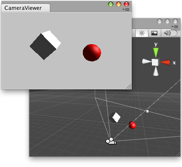

EditorWindow.autoRepaintOnSceneChange
public bool autoRepaintOnSceneChange;
Description 描述
Does the window automatically repaint whenever the Scene has changed?

Editor Window that renders what the main camera is "seeing".
// Simple script that lets you render the main camera in an editor Window.
using UnityEngine; using UnityEditor;
public class CameraViewer : EditorWindow { Camera camera; RenderTexture renderTexture;
[MenuItem("Example/Camera viewer")] static void Init() { EditorWindow editorWindow = GetWindow(typeof(CameraViewer)); editorWindow.autoRepaintOnSceneChange = true; editorWindow.Show(); }
public void Awake() { renderTexture = new RenderTexture((int)position.width, (int)position.height, (int)RenderTextureFormat.ARGB32); }
public void OnEnable() { camera = Camera.main; }
public void Update() { if (camera != null) { camera.targetTexture = renderTexture; camera.Render(); camera.targetTexture = null; } if (renderTexture.width != position.width || renderTexture.height != position.height) renderTexture = new RenderTexture((int)position.width, (int)position.height, (int)RenderTextureFormat.ARGB32); }
void OnGUI() { GUI.DrawTexture(new Rect(0.0f, 0.0f, position.width, position.height), renderTexture); } }